There's a huge part of the internet that's all around us affecting everything we do online, but for millions and millions of people, it's basically invisible. I'm talking about hidden barriers, the ones that decide who gets to fully participate in our digital world and who gets left out. So today, let's pull back the curtain. Let's start with a number, 94.8%.
Time: 0:00:18
Just look at that for a second. That's a huge number. You think it has to be something good, right? So what do you think that could be?
Time: 0:00:28
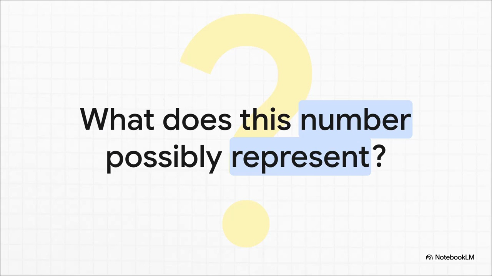
I mean, in the world of tech, a number that high, maybe it's user satisfaction, market share for some new app. Well, the reality is a lot more serious. That's right.
Time: 0:00:40
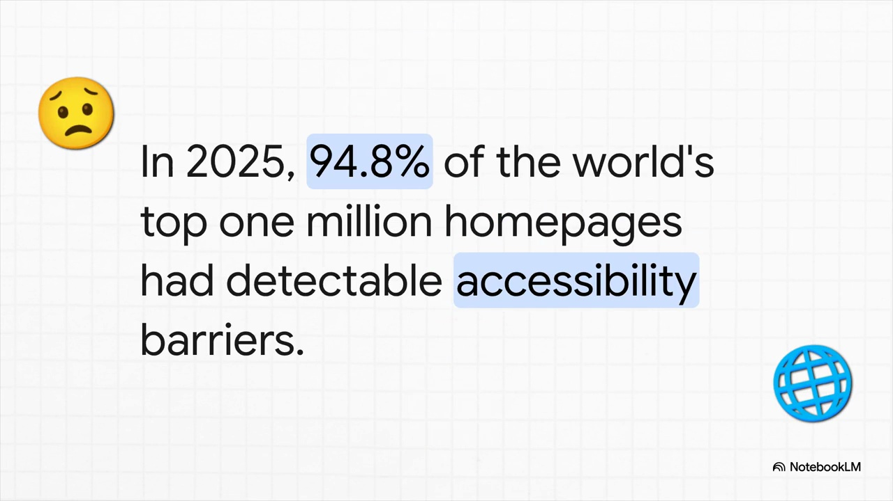
A massive study found that nearly 95% of the web's, most popular sites have basic accessibility failures. These are flaws that create major roadblocks for people with disabilities. So this isn't some tiny niche problem, it's a systemic issue that's baked into the very fabric of the internet.
Time: 0:00:57
Okay? So to really understand why that number is so shockingly high, we gotta back up a step. We have to know what we're aiming for in the first place. So what exactly is digital accessibility at its core?
Time: 0:01:09
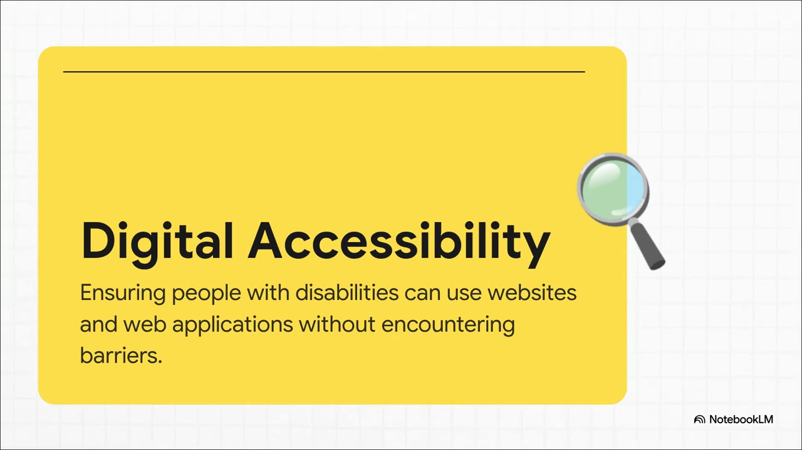
It's pretty simple. It's all about making sure that our digital world, our websites, our apps can be used by people with all kinds of disabilities. The whole goal is to build things in a way that those barriers just don't exist from the start. Now, this might sound really complex,
Time: 0:01:23
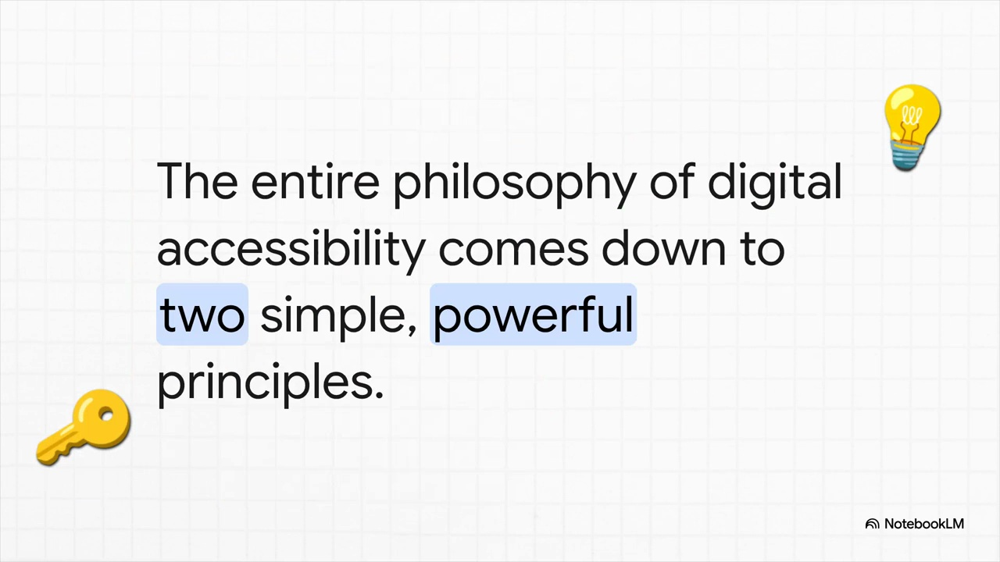
but honestly, the entire philosophy of accessibility rests on two foundational ideas. If you can get your head around these two simple principles, you'll understand the whole thing. So principle one is all about embracing human diversity.
Time: 0:01:36
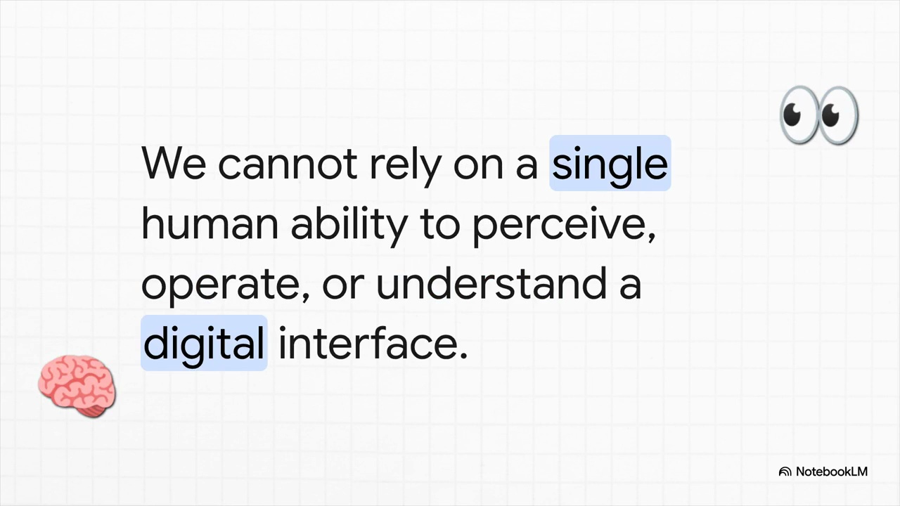
We just can't assume that our user can see or that they can hear, or that they can use a mouse. The design has to be flexible and work for a whole spectrum of human abilities. And the second principle is all about technology.
Time: 0:01:50
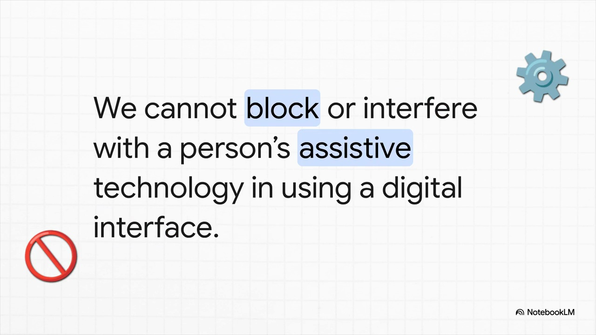
You see, many people with disabilities use special tools to get around the web. Things like screen readers that read text out loud or voice control software. A website has to be built to play nice with these tools, not to put up a wall and block them. Alright, so those are the two core ideas.
Time: 0:02:05
Now let's take a look at what happens in the real world when these principles get ignored. Let's see some of these barriers in action. First up, let's talk about a super common mistake using
Time: 0:02:16
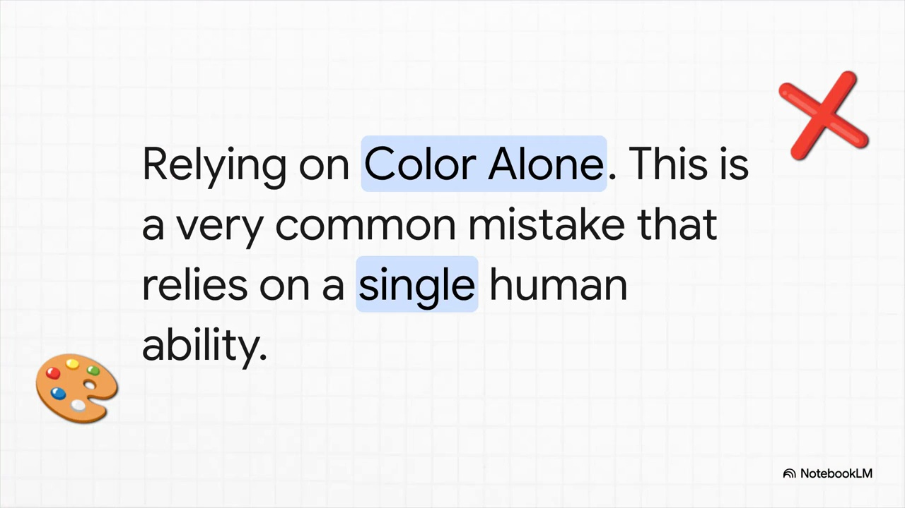
color as the only way to give someone information. Okay, picture this,
Time: 0:02:23
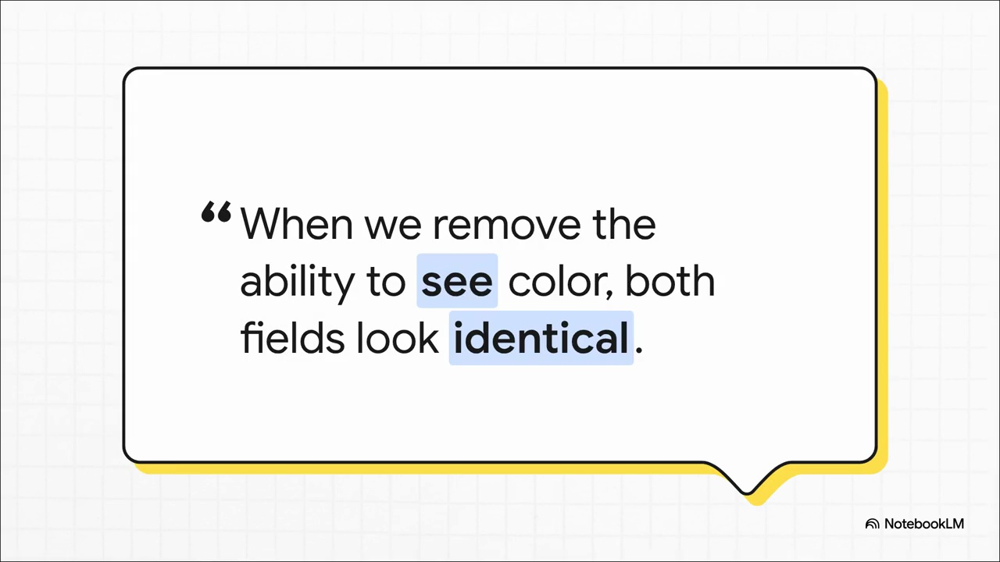
you're filling out a form online and you make a mistake. The little box turns red, simple enough, but what if you're colorblind for you? That red box might look exactly the same as all the others, and just like that, you have no idea where the air is. The information is totally lost, and boom, that is a classic violation of principle one.
Time: 0:02:40
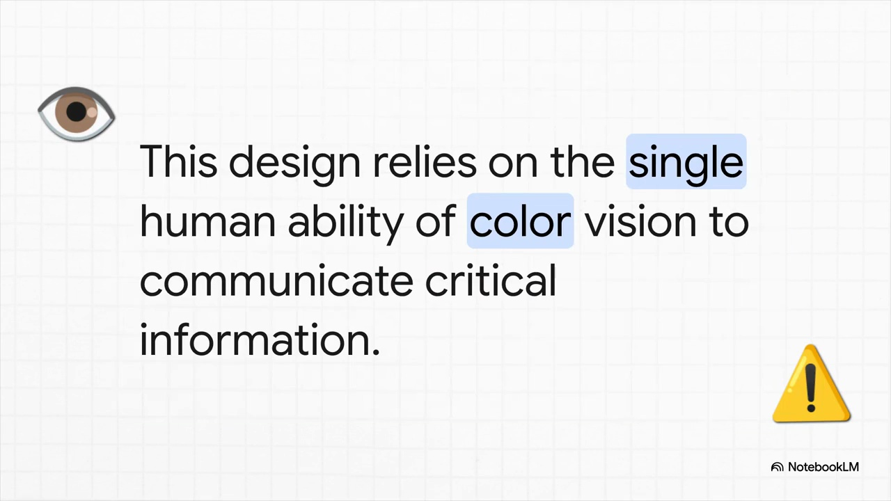
The design is completely dependent on a single human ability. In this case, the ability to see and distinguish specific colors. Alright? Another huge one you'll find absolutely everywhere
Time: 0:02:51
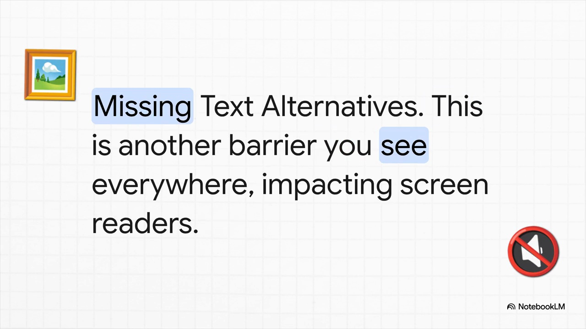
is images or icons that are missing a text description. Think about an icon, maybe a little cloud
Time: 0:02:58
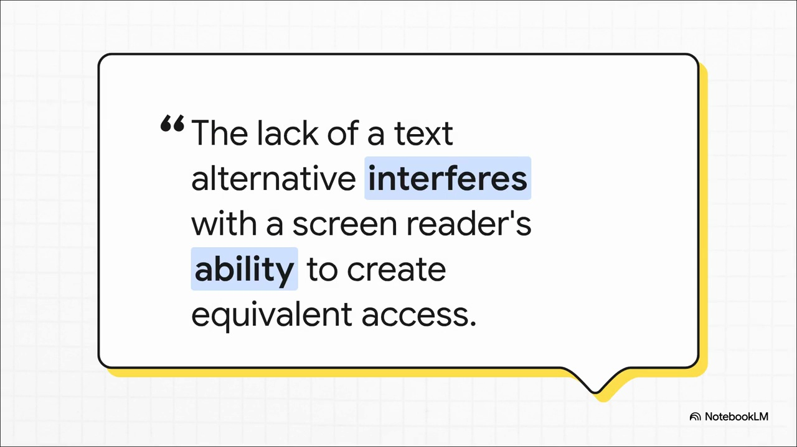
that tells you your file has been saved. If you can see it, it's obvious. But for someone using a screen reader, if there's no text alternative coded in, well, the screen reader has nothing to announce. The icon and its entire meaning are just completely invisible. And here's what's so important about this example.
Time: 0:03:15
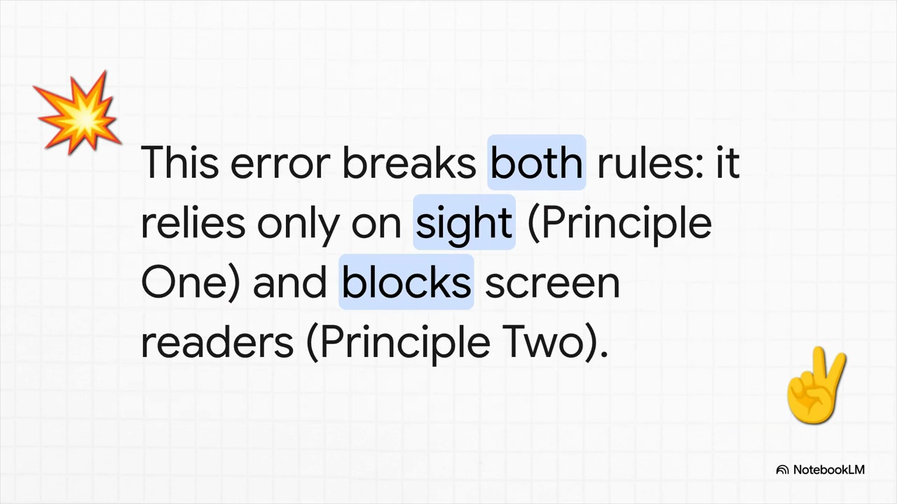
One little mistake can break both of our rules. It relies only on site, which violates principle one, and it actively blocks the screen reader, which violates principle two. Okay, for our last example, let's
Time: 0:03:28
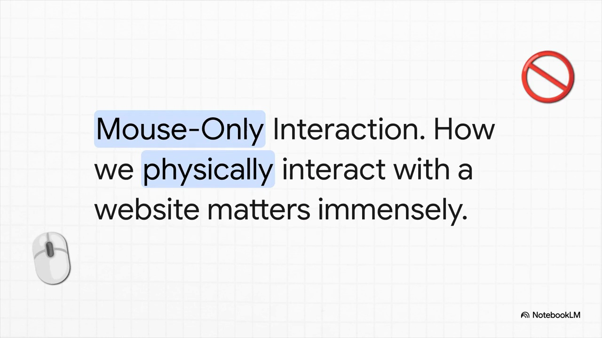
Talk about how we physically Interact with a website. Have you ever tried to get
Time: 0:03:34
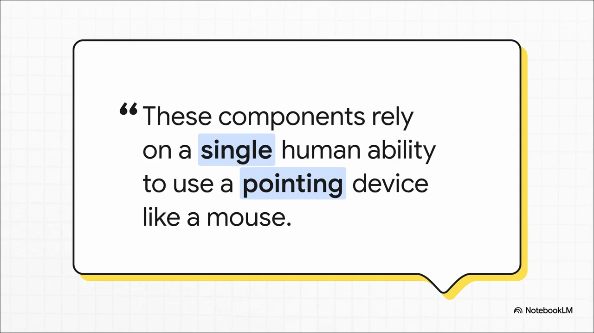
around a website using only the tab key on your keyboard? For many people, that's their main way of navigating, but some sites have links or buttons that are just impossible to get to without a mouse. If you can't use a mouse for whatever reason, those parts of the site are completely off limits to you. And here we go again. We see both principles being broken.
Time: 0:03:52
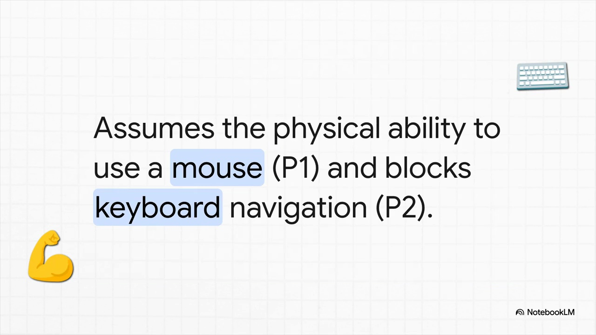
The design makes a huge assumption about the physical ability to use a mouse. And in doing so, it blocks keyboard navigation and other technologies like voice control that rely on that same fundamental structure.
Time: 0:04:08
Now, these examples might seem like small technical glitches, But when you multiply them across millions Of websites, the impact is absolutely enormous. And that's really why this matters so much.
Time: 0:04:19
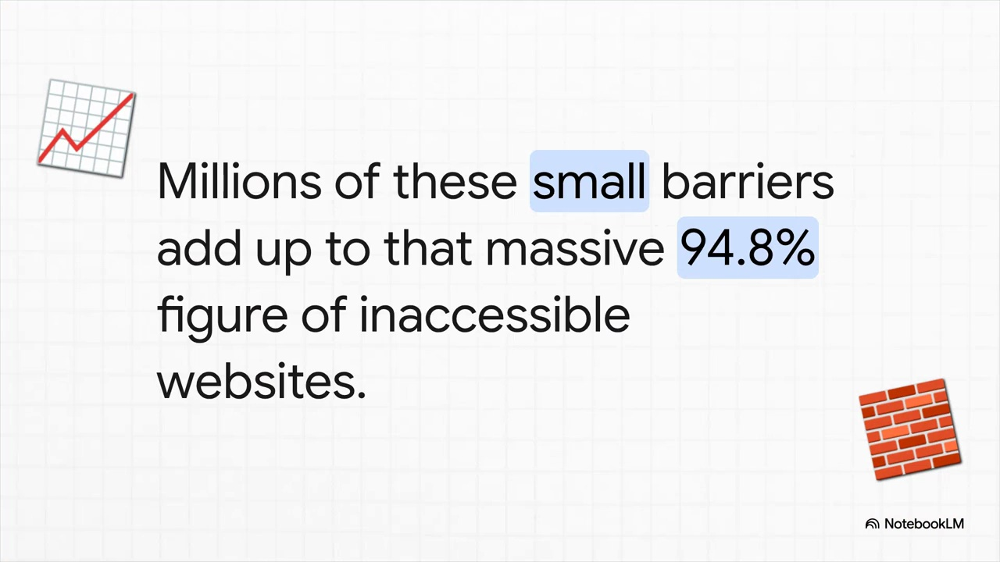
Remember that shocking number from the beginning? It's not from one single giant problem. It's the result of millions of these seemingly small barriers relying on color for getting text descriptions, forcing mouse use, all adding up to a web that is overwhelmingly inaccessible. And if we actually look at the data,
Time: 0:04:35
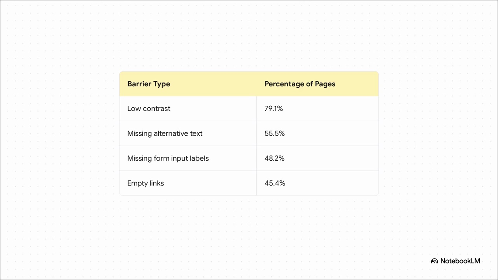
we can see the biggest culprits low contrast text is the number one issue that's on almost 80% of pages, making them hard to read and look what's right behind it. Missing alternative text for images. The exact problem we just talked about on more than half of all homepages, the list just goes on showing the same fundamental mistakes over and over again. But you know, this isn't just a technical issue about
Time: 0:05:00
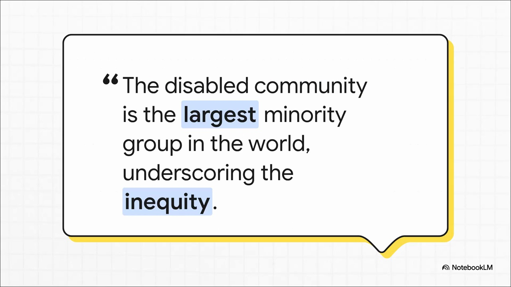
code, it's a human issue. And this quote really puts it all into perspective. When the largest minority group in the entire world is systemically excluded from the most important tool of modern life, well that's a massive problem of equity. And that really leaves all of us
Time: 0:05:16
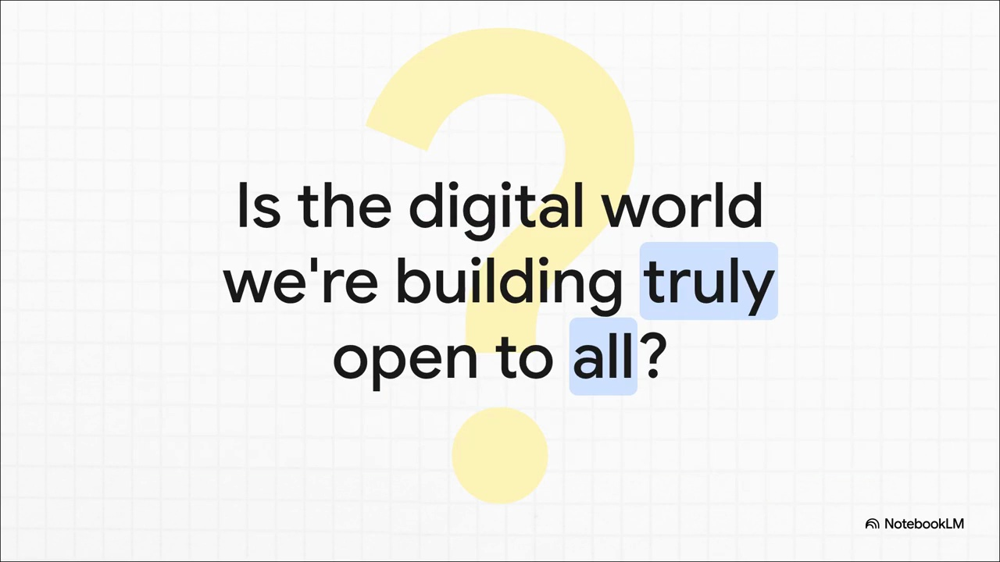
with a critical question to think about. We're all architects of this digital world, whether we build websites, create content, or just use them. So we have to ask ourselves, are we building open public squares for everyone? Or are we building walled gardens with gates that only some of us can open.